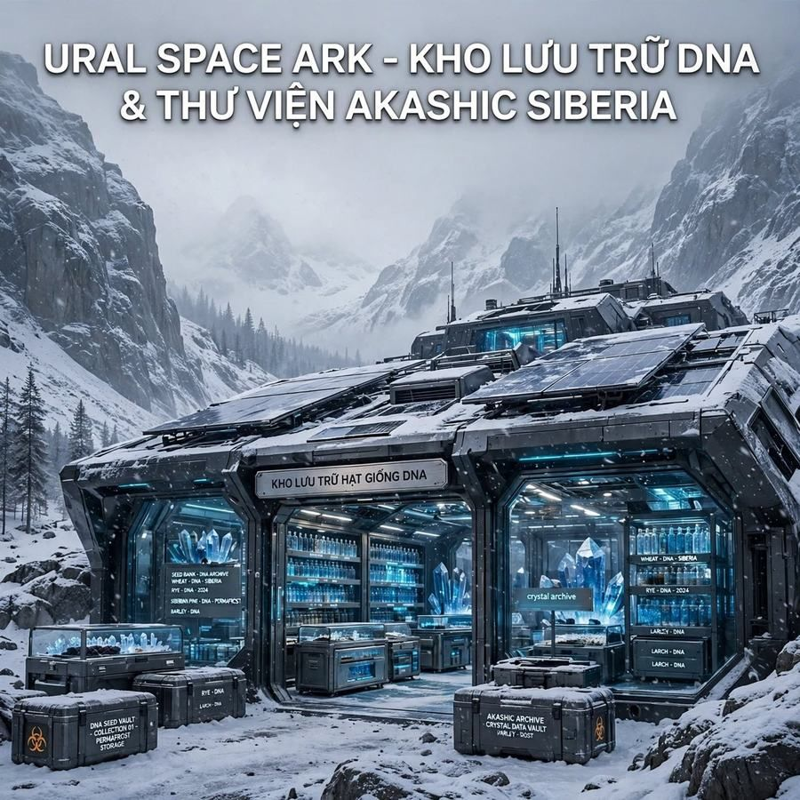
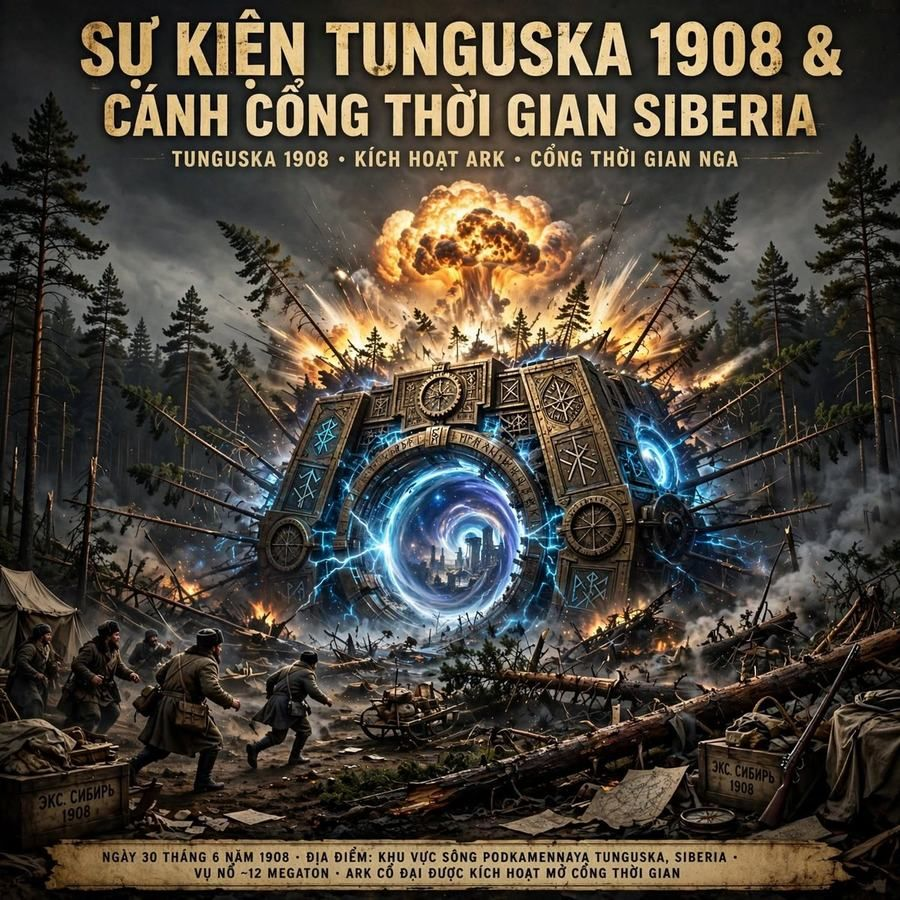
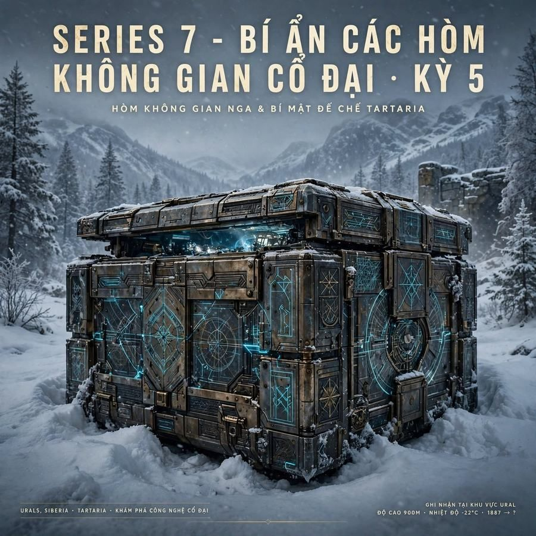
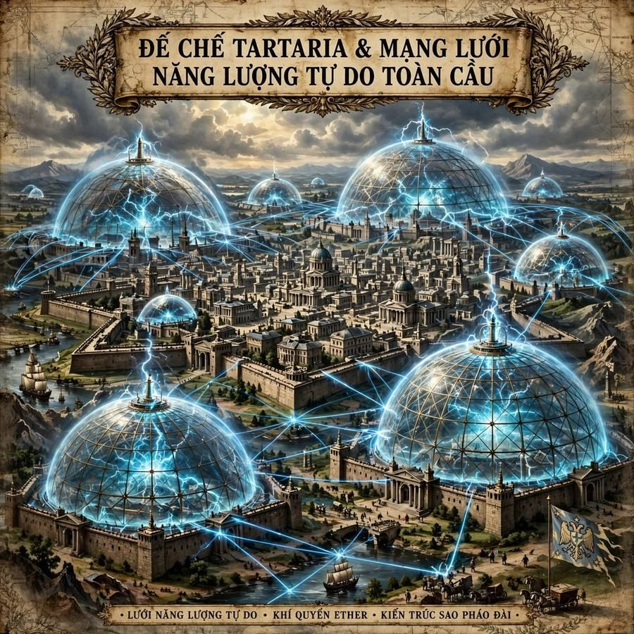

Trang chủ / Chuyên đề 6: Hòm Không Gian Cổ Đại / Kỳ 55
Chuyên đề 6 · Kỳ 55 / 90
HÒM KHÔNG GIAN TRÊN MẶT TRĂNG & SAO HỎA — NHỮNG CHIẾC CHÌA KHÓA BÍ MẬT NGOÀI KHÔNG GIAN

Ở Kỳ 4, chúng ta đã cùng nhau lặn sâu xuống lòng đại dương Thái Bình Dương để khám phá chiếc Hòm Không Gian Pacific Ark, quần thể đền thờ cổ đại Lemuria nguyên vẹn ngoài khơi Đảo Phục Sinh và ma trận nước kết nối tâm thức toàn cầu. Hôm nay, chuyến du hành giải mã di sản khởi nguyên sẽ rời khỏi Trái Đất để vươn tới hai thiên thể gần gũi nhất với chúng ta trong Hệ Mặt Trời: Mặt Trăng và Sao Hỏa — nơi cất giữ những Hòm Không Gian ngoài hành tinh (Off-world Space Arks) nằm chôn giấu suốt hàng chục ngàn năm! Điều gì thực sự ẩn đằng sau phát hiện chấn động của xe tự hành Ngọc Thỏ 2 (Yutu-2) về vật thể hình khối ở mặt khuất Mặt Trăng? Sự thật về con tàu Hòm Không Gian tinh thể khổng lồ nằm sâu bên dưới miệng núi lửa Jules Verne trên Mặt Trăng được đoàn thám hiểm liên minh Mỹ - Trung khám phá ra sao? Các trận "động đất Sao Hỏa" (Marsquakes) kỳ lạ được thiết bị NASA ghi nhận năm 2022 có liên quan gì đến sự thức tỉnh của Hòm Không Gian Sao Hỏa và việc giải phóng vệ tinh Phobos? Và tại sao những con tàu ngoài không gian này lại phát ra các chùm sóng liên lạc trực tiếp kết nối với Hòm Không Gian Đại Tây Dương và mạng lưới ngầm Trái Đất?
1. HÒM KHÔNG GIAN MẶT TRĂNG — CẤU TRÚC TINH THỂ CỔ ĐẠI DƯỚI MIỆNG NÚI LỬA JULES VERNE
Mặt Trăng không chỉ là một vệ tinh lòng rỗng mang nhiều căn cứ ngầm, mà còn là nơi lưu giữ một trong những chiếc Hòm Không Gian cổ đại quan trọng nhất của Hệ Mặt Trời. A. Sự Cố Xe Tự Hành Yutu-2 (Ngọc Thỏ 2) & Vật Thể Hình Khối Bí Mật
- Phát Hiện Ở Vùng Tối Mặt Trăng: Cuối năm 2021, xe tự hành Ngọc Thỏ 2 (Yutu-2) của Trung Quốc khi hoạt động tại phía xa của Mặt Trăng đã ghi lại hình ảnh một vật thể khối vuông nhô lên khỏi bề mặt, kích thích cuộc điều tra tối mật quốc tế.
- Sứ Mệnh Khám Phá Hỗn Hợp Mỹ - Trung: Cuộc phát hiện này đã dẫn đến chuyến thám hiểm chung bí mật giữa quân đội Hoa Kỳ và Trung Quốc. Nhóm đặc nhiệm và các nhà khảo cổ đã tiếp cận con tàu Hòm Không Gian khổng lồ có dạng hình bầu dục (Oval-shaped Ark) được chôn sâu bên dưới miệng núi lửa Jules Verne. B. Vật Liệu Moldavite Tự Phát Sáng & Tín Hiệu Liên Lạc Thiên Hà
- Cấu Trúc Tinh Thể Tách Biệt Với Đất Mặt Trăng: Quân nhân JP (nhân chứng Lục quân Mỹ) khi tham gia sứ mệnh đã mô tả: Con tàu hoàn toàn không làm bằng kim loại thô hay đất đá Mặt Trăng, mà được tạo thành từ hợp kim tinh thể hữu cơ cao tần (Moldavite) tự tỏa sáng và truyền tải năng lượng an lành.
- Tự Động Phát Tín Hiệu Sóng Lượng Tử: Sau khi hạm đội Các Đấng Sáng Lập (The Seeders) tiến vào khu vực Sao Mộc vào tháng 10/2021, Hòm Không Gian Mặt Trăng đã lập tức "mở mắt" , phát ra dải sóng vô hướng liên tục kết nối với Hòm Đại Tây Dương, Hồ Vostok và các thiên thể khác.

2. HÒM KHÔNG GIAN SAO HỎA & SỰ GIẢI PHÓNG VỆ TINH PHOBOS
Bên dưới lớp cát đỏ hoang vu của Sao Hỏa và các vệ tinh xung quanh là nơi an nghỉ của những Hòm Không Gian mang di sản sinh học cổ đại. A. Thảm Họa Tiamat 12.500 Năm Trước & Sự Chôn Giấu Di Sản
- Dấu Tích Văn Minh Nguyên Thủy: Trước thảm họa nổ hành tinh Tiamat cách đây 12.500 năm, Sao Hỏa từng là một thế giới trù phú với bầu khí quyển xanh tươi và các đô thị cổ đại. Trước khi di tản, Các Đấng Sáng Lập đã niêm phong trọn vẹn tri thức và bộ gen nguyên thủy vào các Hòm Không Gian chôn sâu dưới vỏ địa chất Sao Hỏa. B. "Động Đất Sao Hỏa" 2022 & Sự Kích Hoạt Tỏa Nhiệt
- NASA Ghi Nhận Địa Chấn Kỷ Lục: Tháng 5 năm 2022, thiết bị InSight của NASA ghi nhận trận "động đất Sao Hỏa" lớn nhất lịch sử. Thực chất, đây là phản ứng tỏa nhiệt và rung động từ trường khi Hòm Không Gian Sao Hỏa chính thức thức tỉnh, giải phóng năng lượng làm tan chảy lớp ma trận phong tỏa cổ đại.
- Giải Phóng Vệ Tinh Phobos: Cuộc thức tỉnh này đi kèm với việc lực lượng Liên Đoàn Thế Giới Thiên Hà (GFW) đánh đuổi toàn bộ phe tiêu cực khỏi vệ tinh Phobos — nơi cất giữ các cổng sao cổ đại kết nối với Sao Hỏa.
3. MẠNG LƯỚI CỔNG DỊCH CHUYỂN TỨC THỜI MẶT TRĂNG – SAO HỎA – TRÁI ĐẤT
Các Hòm Không Gian ngoài Trái Đất không hoạt động đơn lẻ mà nằm trong một hệ thống định vị giao thông siêu chiều thống nhất. A. Cánh Cổng Jumpgate Nối Trực Tiếp Các Hòm Không Gian
- Dịch Chuyển Tức Thời Nhờ Tần Số Quang Phổ: Mỗi Hòm Không Gian trên Mặt Trăng và Sao Hỏa đều tích hợp một Cổng Sao (Stargate / Jumpgate). Thông qua cổng này, các phi hành đoàn có thể dịch chuyển tức thời từ Hòm Không Gian Đại Tây Dương hoặc Nam Cực lên thẳng lòng tàu Mặt Trăng hay Sao Hỏa mà không cần dùng phi thuyền di chuyển qua không gian thô. B. Sự Bế Tắc Của Phe Bóng Tối (Nebu & Deep State)
- Không Thể "Bẻ Khóa" Công Nghệ Cổ Đại: Phe kiểm soát tiêu cực (Nebu, Bò sát Ciakahrr và Deep State) dù đã phát hiện vị trí các Hòm Không Gian trên Mặt Trăng và Sao Hỏa từ thập niên 1940, nhưng suốt nhiều thập kỷ hoàn toàn bế tắc không thể truy cập vào lõi điều khiển.
- Chìa Khóa Ý Thức & DNA Paa-Taal: Hệ thống điều khiển của các Hòm Không Gian ngoài không gian được mã hóa bằng ma trận tần số từ bi và nhận diện DNA. Chỉ khi có các cá nhân mang mã gen kích hoạt bẩm sinh tiến vào, con tàu mới mở ra các kho tàng tri thức.

4. TÁC ĐỘNG TỔNG HỢP ĐẾN TIẾN TRÌNH FULL DISCLOSURE TOÀN CẦU
Sự thức tỉnh đồng loạt của các Hòm Không Gian ngoài Trái Đất đóng vai trò là ngòi nổ thúc đẩy sự sụp đổ của ma trận giam cầm. A. Buộc Công Khai Tri Thức Khảo Cổ Vũ Trụ
- Bức Tường Che Giấu Bị Phá Vỡ: Việc các Hòm Không Gian trên Mặt Trăng và Sao Hỏa liên tục phát ra sóng nhiệt và chùm sáng năng lượng đã buộc các cơ quan không gian bề mặt phải dần dần giải mật thông tin, chuẩn bị cho thời khắc công khai sự tồn tại của văn minh ngoài hành tinh. B. Phục Hồi Vị Thế Cho Nhân Loại Trái Đất
- Kết Nối Lại Chuỗi Di Truyền Thiên Hà: Năng lượng phát ra từ mạng lưới Arks Mặt Trăng - Sao Hỏa đang thẩm thấu trực tiếp vào từ trường Hệ Mặt Trời, giúp kích hoạt lại các chuỗi DNA rác trong cơ thể con người, đưa nhân loại trở về trạng thái tự do thần thánh vốn có.

5. LỜI KẾT KỲ 5: CHÌA KHÓA MỞ RA VŨ TRỤ NẰM Ở TÂM THỨC BẠN
Kỳ 5 của chuyên đề 6 khép lại mang đến cái nhìn bừng sáng về di sản ngoài không gian:
- Mặt Trăng & Sao Hỏa Cất Giữ Quá Khứ Của Chúng Ta: Những Hòm Không Gian ngoài hành tinh không hề xa lạ; chúng chính là những bảo tàng thời gian lưu giữ cội nguồn tiến hóa của loài người Trái Đất.
- Khai Mở Tần Số Trái Tim: Không một vũ lực hay công nghệ bóng tối nào có thể chiếm đoạt di sản của Đa Vũ trụ. Chìa khóa để bước vào Kỷ nguyên du hành vũ trụ chính là sự giác ngộ, lòng từ bi và tình yêu thương trong chính tâm thức bạn!
